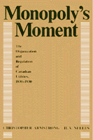

A detailed account of the struggle to build and regulate the public and private utilities in Canada
A detailed account of the struggle to build and regulate the public and private utilities in Canada


 A detailed account of the struggle to build and regulate the public and private utilities in Canada
A detailed account of the struggle to build and regulate the public and private utilities in Canada

|  |
Monopoly's MomentThe Organization and Regulation of Canadian Utilities, 1830-1930Christopher Armstrong and H. V. Nellescloth EAN: 978-0-87722-404-4 (ISBN: 0-87722-404-8) |
Monopoly’s Moment provides the first detailed account of the struggle to build and regulate the public and private utilities which have become Canada’s largest economic organizations. Christopher Armstrong and H.V. Nelles examine Canada’s response to the problem of monopoly inherent in the water, gas, street, railroad, hydroelectric, and telephone technologies. As elsewhere, monopolies were made and defended, but the Canadian solution to the question of their legitimacy led to the recovery of some of this community property by the state.
Regionally distinctive operations of these utilities, which relied more heavily upon public ownership than their U.S. counterparts, created a diverse yet highly integrated utilities sector. Regulation and monopoly were social as much as technological products. Professors Armstrong and Nelles analyze the making of these monopolies and the complex interaction of social, economic, and political forces within each region which determined the choice of the regulatory instrument.
Using primary sources, many of which are unique to this study, and choosing examples for all of Canada’s regions, the authors unfold a comprehensive national picture of the development of public service monopolies for an entire country over a century. For the first time in one volume, Monopoly’s Moment offers a history of the organizational and regulatory issues common to all of the utilities of a major industrial nation. Students of business and economic history, regulation and public choice, history of technology, urban history, and political economy will value this important monograph.
Christopher Armstrong is Professor in the Department of History, York University (Toronto).
H. V. Nelles is Professor in the Department of History, York University (Toronto).
History
Political Science and Public Policy
Technology and Urban Growth, edited by Blaine Brownell, Donald T. Critchlow, Mark S. Foster, Mark Rose, and Joel A. Tarr.
Technology and Urban Growth, edited by Blaine Brownell, Donald T. Critchlow, Mark S. Foster, Joel Tarr, and Mark Rose, focuses on the relationships between urban growth and change and developments in technological fields such as transport, utilities, and housing and office construction.
© 2015 Temple University. All Rights Reserved. This page: http://www.temple.edu/tempress/titles/371_reg.html.